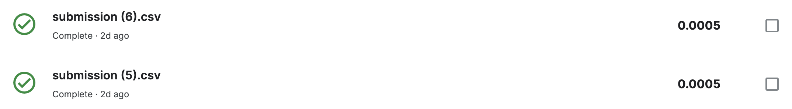
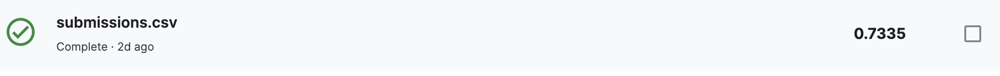
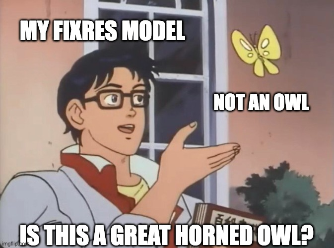

This project is from a Kaggle competition (Found here). For this competition,
each team is challenged to build a machine building model that identifies the types
birds in a dataset of images.
Previous work
I tried two different pretrained models:
FixRes found here: https://github.com/facebookresearch/FixRes. and
I specifically used the "FixResNeXt-101 32x48d" model as it had high values for its accuracy
with its Top-1 accuracy being 86.3% and its Top-5 accuracy being 97.9%.
FixRes: I used a softmax activation layer, 5 epochs, a learning rate of 1e-3, and a batch size of 32.
For each epoch, I stepped through 10% of the training data. I also compiled my model using the Adam optimizer.
I also played around with having a data_augmentation layer which would randomly flip the data.
ResNet18: I decided to switch things up a bit using the ResNet18 model and I used 5 epochs, a learning rate of 0.01,
a weight decay rate of 0.005, and a batch size of 64. For each epoch, I also stepped through 10% of the training data
and I also compiled my model using the Adam optimizer.
Datasets
I used the dataset that was provided in the competition (Here) which had around 10,000 test images
and around 38,000 train images.
Results
FixRes:
Epoch 1: Training Accuracy: 0.0797 | Training Loss: 5.7492
Epoch 2: Training Accuracy: 0.2000 | Training Loss: 4.3258
Epoch 3: Training Accuracy: 0.2888 | Training Loss: 3.5563
Epoch 4: Training Accuracy: 0.3513 | Training Loss: 3.1271
Epoch 5: Training Accuracy: 0.3862 | Training Loss: 2.8972
Result: Accuracy: 4.0000e-04 | Loss: 9.7771 (Below is the Kaggle submission with the score on the right)

I don't know where things went wrong... Things were looking so well but I guess using
the FixRes model and using the tensorflow library proved a bit too challenging for me
and thus I couldn't get my model working.
ResNet18:
Epoch 1: Training Loss: 6.192
Epoch 2: Training Loss: 6.011
Epoch 3: Training Loss: 6.027
Epoch 4: Training Loss: 5.992
Epoch 5: Training Loss: 5.878
Result: Below is the Kaggle submission with the score on the right

I couldn't find a way to get the training accuracy to print or get the actual result loss/accuracy
as this was using the torchvision library which I was less comfortable with as I spent most of my time
using the tensorflow library and the FixRes model. But I got this model to work (with a decent submission score)
and thats all that matters!!!
Discussion
What problems did you encounter?
At first, trying to get code to run on my computer was a giant hassle with dependency issues,
trying to get tensorflow (FixRes related) to work on a mac with an m1 chip took a lot of workarounds
and ultimately just did not end up working so I moved to a Kaggle notebook.
Learning how to get my code to function correctly on a Kaggle notebook was challenging. It was my first time
using an environment like it and there was a lot of learning to be done.
Understanding and using a pretrained model that was built and developed by industry research was difficult (FixRes).
Ultimately I could not get this model to work successfully, showcased in the poor results above D :

Are there next steps you would take if you kept working on the project?
I would have liked to have gotten my FixRes model working, it seems like the loss numbers
are much lower than in my ResNet18 model, but after trying to debug and get my FixRes model
working for a while, I called it quits and shifted to using the ResNet18 model. However,
going from using the tensorflow library to using torchvision was a lot of work, and I would
have liked to have gotten my FixRes model working using the tensorflow library because
that seemed to have been working stronger and the library looked cooler.
How does your approach differ from others? Was that beneficial?
I'm not sure if my approach really differs from others, using a pretrained
model might be considered as a "cop out" and using too much assistance,
but I think that getting to use a model and the framework from industry
research was pretty cool and getting to see it in action on the birds was
great! I also think that running into failure (my FixRes model just didn't
produce results) was good and I learned a lot from needing to completely change
and use the ResNet18 model. Learning how to get both models up and running (one not so successful as the other :/ ) was
beneficial to my learning and I think I learned a lot from doing this final project.